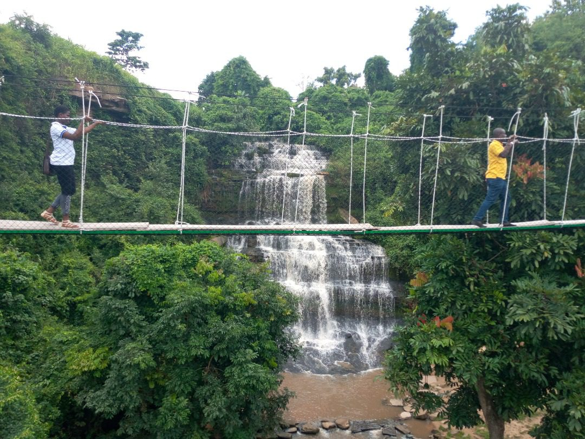

Welcome to KintampoToDay
About Kintampo
Kintampo is a vibrant community rich in culture, history, and natural beauty. Explore our tourist sites, stay updated on events, and learn more about our heritage.
Kintampo is well-connected by road, with major highways like the N10 and N11 passing through the town. These roads facilitate the movement of goods and people, linking Kintampo to cities like Kumasi, Tamale, and Accra. However, some rural roads still require upgrades to improve accessibility for surrounding communities.
The Kintampo College of Health and Well-Being (formerly known as the Kintampo Rural Health Training School) is one of Ghana’s premier institutions dedicated to training healthcare professionals. Located in the heart of Kintampo, in the Bono East Region, the college plays a critical role in addressing Ghana’s healthcare needs by producing skilled and compassionate health workers.
The town is home to the Kintampo Municipal Hospital, which serves as a key healthcare provider for the region. Additionally, there are several clinics and community health centers that cater to the needs of residents and nearby rural areas.
Tourist Sites
Kintampo Waterfalls
A breathtaking natural wonder perfect for hiking and picnics.

Kintampo Museum
Learn about the rich history and culture of the Kintampo people.
Upcoming Events
- Cultural Festival - October 15, 2025
- Community Clean-Up - November 5, 2025
- Farmers Market - Every Saturday
Blog
Exploring Kintampo's History
Posted by Admin on March 23, 2025
Discover the fascinating history of Kintampo through our latest blog post.
While the Kintampo Waterfalls often steal the spotlight, Fuller Falls is another hidden gem worth exploring. Located a few kilometers from the main town, this lesser-known waterfall offers a more secluded and tranquil experience. The journey to Fuller Falls is an adventure in itself, as you trek through scenic trails and immerse yourself in the natural beauty of the region.
Kintampo is not just about natural wonders; it’s also a place where you can connect with Ghana’s rich cultural heritage. The town is home to the Kintampo people, who are known for their warm hospitality and vibrant traditions. Take the time to visit local communities, where you can learn about traditional crafts, music, and dance. If you’re lucky, you might even witness a cultural festival or ceremony, which are often filled with colorful costumes, drumming, and storytelling.
Kintampo holds a special place in Ghana’s history. It is believed to be the geographical center of Ghana, earning it the nickname “The Center of Ghana.” This strategic location has made Kintampo a hub for trade and commerce over the years. The town also played a role in the trans-Saharan trade routes, connecting West Africa to North Africa and beyond. For history enthusiasts, a visit to the Kintampo Museum is a must. The museum offers insights into the town’s past, including its role in Ghana’s pre-colonial and colonial history. You’ll find artifacts, photographs, and exhibits that tell the story of Kintampo’s evolution over the centuries.
0 0
Comments